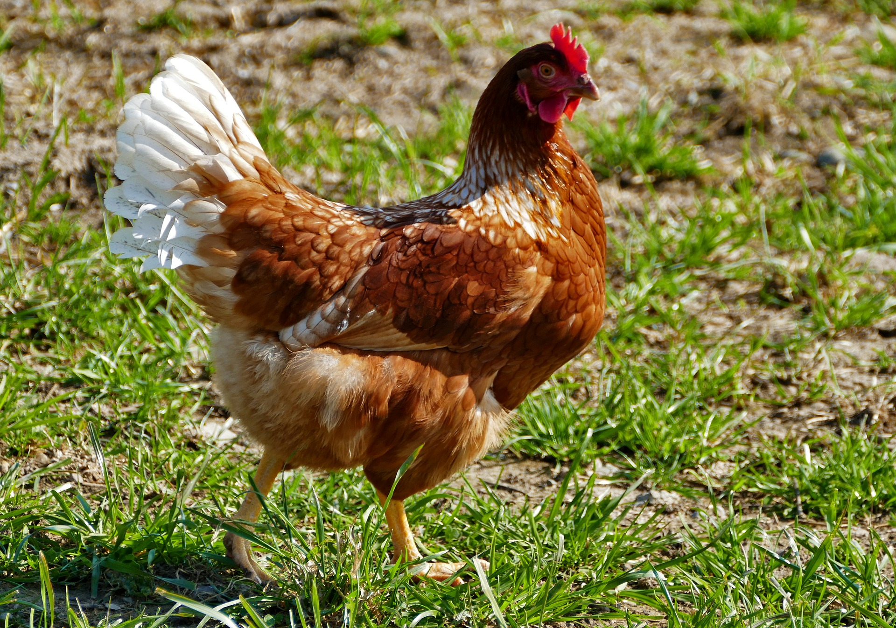

식재료 이모저모 |
|
|---|---|
닭 닭이란 닭목 꿩과의 조류 중 한 종으로, 가금류들을 대표하는 동물이자 지구상에서 개체수가 가장 많은 조류이며, 전 세계에서 가장 많이 사육되고 도축되는 동물이다. 2009년 기준으로 전 세계에서 도축되는 닭은 무려 한 해에 무려 520억 마리이다. 매 초마다 평균 약 1,648 마리씩 도축되고 있는 것인데, 2위인 오리는 26억 마리, 3위인 토끼는 22억 마리, 4위인 돼지는 13억 마리, 5위인 양은 9억 마리(염소 포함), 6위인 칠면조는 7억 마리, 7위인 소는 4억 마리가 도축되었는데 2~7위를 다 합쳐도 1위인 닭의 4분의 1도 안 된다. 인류의 주요 단백질 공급원들 중 하나이며 십이지 동물 중 유일한 새다. 조류 중 가장 친숙하게 접하는 동물이라, 새를 싸잡아서 닭으로 칭하는 이들도 있다. 닭이 전래되지 못하고 제대로 된 양계 기술이 퍼지지 못했을 때의 인류는 만성적인 고기(단백질) 부족에 시달려야 했으며, 닭이 전파되고 나서 식인 문화권에서 식인 풍습이 사라지게 되었다. |
|